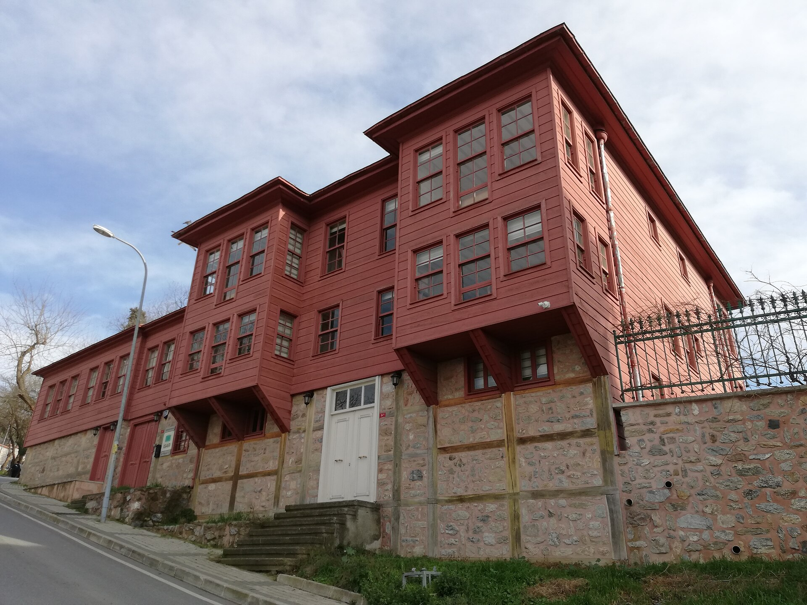

The Uzbek lodge and migration along the Hajj road: Central Asians' Ottoman tekkes (18th–20th centuries)
Long before the Soviet era, the Hajj was for Central Asians a long journey through Istanbul, Jerusalem, Damascus, Mecca and Medina. Along that road a network of tekkes — lodges for Uzbek, Bukharan and Kashgari pilgrims — took shape. The most famous is the 'Uzbeks' Lodge' in Üsküdar, Istanbul.

Long before independence, and even long before the Soviet era, going on the Hajj was for Central Asians a journey of many months, long and dangerous, passing through Istanbul, Damascus, Jerusalem and on to Mecca and Medina. Along that road a network of 'tekkes' (lodges, also called zawiya or takiya) grew up, serving Uzbek, Bukharan, Kashgari and other Turkestani pilgrims as shelter, a source of food and a spiritual center. This is a distinct chapter — different from labor migration — of migration and community formation tied to religious pilgrimage (Source: Stanford University Press — Lâle Can, 'Spiritual Subjects'; Jadaliyya — interview with Lâle Can).
The 'Uzbeks' Lodge' in Istanbul
The most famous point of this network is the 'Uzbeks' Lodge' (Turkish: Özbekler Tekkesi) in the Sultantepe neighborhood of the Üsküdar district, on the Asian side of Istanbul. According to the sources it was first built around the 1750s for pilgrims from Central Asia — reportedly on the very spot where such pilgrims traditionally pitched their tents. The lodge was run by the Naqshbandi order and was rebuilt in 1844 (Source: Wikipedia — Sultantepe, Üsküdar).
For centuries this lodge served as one of the main stopping and gathering places in Istanbul for Central Asian pilgrims heading to the Hejaz — to Mecca and Medina. Later, during the Turkish War of Independence (1919–1923), the lodge was also used as a refuge and meeting place for members of the resistance, as a communications center, a hospital and a weapons depot (Source: Wikipedia — Sultantepe, Üsküdar).

A network of lodges along the Hajj road
The historian Lâle Can studied this movement for the years 1869–1914 in her book 'Spiritual Subjects: Central Asian Pilgrims and the Ottoman Hajj at the End of Empire,' published by Stanford University Press (2020). As Hajj traffic through the Russian Empire grew, the number of Central Asian pilgrims rose in this period; the lodges kept registers recording the pilgrims. Central Asian communities — Bukharans, Kashgaris, Andijanis and Turkestanis in general — settled along the Hajj road in Istanbul (around Eyüp, Üsküdar and the Süleymaniye area), Damascus, Jerusalem and in Mecca and Medina (Source: Stanford University Press — Lâle Can, 'Spiritual Subjects'; Jadaliyya — interview with Lâle Can).
The communities in Mecca and Medina
In Medina the Bukharans had guesthouses — one of them located very close to the Prophet's Mosque — and in the city's Hattaba quarter there was a lodge called the 'Takiyat al-Bukhariyya.' In Mecca and Medina there were also tekkes run by and for Kyrgyz, Kazakh and Kashgari pilgrims. These places gave pilgrims temporary lodging, and led some of them to settle there permanently (Source: Jadaliyya — interview with Lâle Can; Stanford University Press — Lâle Can, 'Spiritual Subjects').
A Central Asian lodge in Jerusalem
Another point on the Hajj road was Jerusalem (al-Quds). Researchers note that in the Old City, near the Via Dolorosa, there was a lodge belonging to Central Asians — the 'Zawiyat al-Uzbakiyya' (the Uzbeks' lodge) — which likewise served as a dwelling for pilgrims and for Central Asians who settled there (Source: Stanford University Press — Lâle Can, 'Spiritual Subjects').
A 'de facto' Ottoman subjecthood
According to Lâle Can's research, these communities acquired a distinctive 'de facto subjecthood' under the Ottoman Empire's claims to the caliphate: although they were not formally subjects of the empire, through the Hajj and the religious lodges they entered into a practical legal relationship with the Ottoman administration. In this way religious pilgrimage became a matter not only of spirituality but also of legal and social belonging (Source: Stanford University Press — Lâle Can, 'Spiritual Subjects'; Jadaliyya — interview with Lâle Can).
The later period: lodges becoming places of exile
After the 1917 revolution and the establishment of Soviet power, Hajj traffic from Central Asia fell sharply and borders were closed. In that period the old Hajj lodges in Istanbul and the Hejaz — including the Uzbeks' Lodge — changed their function and became shelter and community centers for Turkestani émigrés who had left their homeland. In this way the infrastructure of religious pilgrimage became part of the 20th-century diaspora network (Source: Stanford University Press — Lâle Can, 'Spiritual Subjects'; Wikipedia — Sultantepe, Üsküdar).
Why this matters
The history of the Hajj lodges reveals one of the oldest layers of the Uzbek and Central Asian diaspora — communities formed not through labor or politics but through religious pilgrimage. The Uzbeks' Lodge in Istanbul survives to this day and stands as a material witness to those long journeys and to the pilgrims who settled abroad. This article presents only verified historical facts.